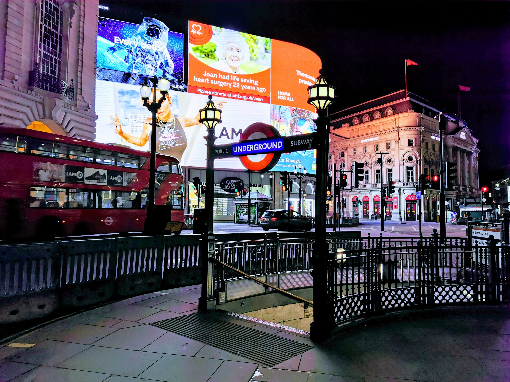

This is nn:s homepage. This privacy policy will explain how my homepage uses the personal data we collect
from you when you use my website.
Topics:
What data do we collect?
How do we collect your data?
How will we use your data?
Marketing
What are your data protection rights?
What are cookies?
How do we use cookies?
What types of cookies do we use?
How to manage your cookies
Privacy policies of other websites
Changes to our privacy policy
How to contact us
How to contact the appropriate authorities
What data do we collect?
My homepage collect the following data:
Personal identification information (Name, email address, phone number, etc.)
How do we collect your data?
You directly provide most of the data my homepage collect. We collect data and process data when you:
Voluntarily provide feedback via email.
Use or view our website via your browser’s cookies.
We may also receive your data indirectly from the Google Analytics.
How will we use your data?
We collects your data so that I can respond on your Email.
Marketing
Currently we don't conducts any marketing activities on this site.
What are your data protection rights?
We would like to make sure you are fully aware of all of your data protection rights. Every user is
entitled to the following:
The right to access – You have the right to request us for copies of your personal
data. We may charge you a small fee for this service.
The right to rectification – You have the right to request that we correct any
information you believe is inaccurate. You also have the right to request us to complete the information you
believe is incomplete.
The right to erasure – You have the right to request that we erase your personal
data, under certain conditions.
The right to restrict processing – You have the right to request that we restrict
the processing of your personal data, under certain conditions.
The right to object to processing – You have the right to object to
our processing of your personal data, under certain conditions.
The right to data portability – You have the right to request that we transfer the
data that we have collected to another organization, or directly to you, under certain conditions.
If you make a request, we have one month to respond to you. If you would like to exercise any of these rights,
please contact us at our email: nn@nn.com
Cookies
Cookies are text files placed on your computer to collect standard Internet log information and visitor
behavior information. When you visit our websites, we may collect information from you automatically through
cookies or similar technology.
For further information, visit allaboutcookies.org.
How do we use cookies?
My webpage uses cookies to improve your experience on my website and to understand how you use my
website.
What types of cookies do we use?
There are a number of different types of cookies, however, our website uses cookies so that we recognize you on
our website and remember your previously selected preferences. These could include what language you prefer and
location you are in. A mix of first-party and third-party cookies are used.
How to manage cookies
You can set your browser not to accept cookies, and the above website tells you how to remove cookies from your
browser. However, in a few cases, some of our website features may not function as a result.
Privacy policies of other websites
Our website contains links to other websites. Our privacy policy applies only to our website, so if you click
on a link to another website, you should read their privacy policy.
Changes to our privacy policy
We keep our privacy policy under regular review and places any updates on this web page. This privacy policy
was last updated on 20 January 2020.
How to contact us
If you have any questions about our privacy policy, the data we hold on you, or you would like to exercise
one of your data protection rights, please do not hesitate to contact us.
Email us at: nn@nn.com
How to contact the appropriate authority
Should you wish to report a complaint or if you feel that we has not addressed your concern in a satisfactory
manner, you may contact me.
Email: nn.nn.com

London
London, the capital of England and the United Kingdom, is a 21st-century city with history stretching
back
to Roman times. At its centre stand the imposing Houses of Parliament, the iconic ‘Big Ben’ clock
tower
and
Westminster Abbey, site of British monarch coronations. Across the Thames River, the London Eye
observation
wheel provides panoramic views of the South Bank cultural complex, and the entire city. London has
alot
to
offer wether you're looking to relax, go shopping at the famous Oxford street, or do you think you
have
what
it takes to party like a Brit? Then you should definately take a tour in London's rich night life.
Paris
Paris, France's capital, the city of Love and Fashion, and with it's rich cuisine-culture, Paris
simply
has
it all, it is a major European city and a global center for art, fashion, gastronomy and culture. Its
19th-century cityscape is crisscrossed by wide boulevards and the River Seine. Beyond such landmarks
as
the
Eiffel Tower and the 12th-century, Gothic Notre-Dame cathedral, the city is known for its cafe culture
and
designer boutiques along the Rue du Faubourg Saint-Honoré
Tokyo
Tokyo, Japan’s busy capital, mixes the ultramodern and the traditional, from neon-lit skyscrapers to
historic temples. The opulent Meiji Shinto Shrine is known for its towering gate and surrounding
woods.
The
Imperial Palace sits amid large public gardens. The city's many museums offer exhibits ranging from
classical art (in the Tokyo National Museum) to a reconstructed kabuki theater (in the Edo-Tokyo
Museum).